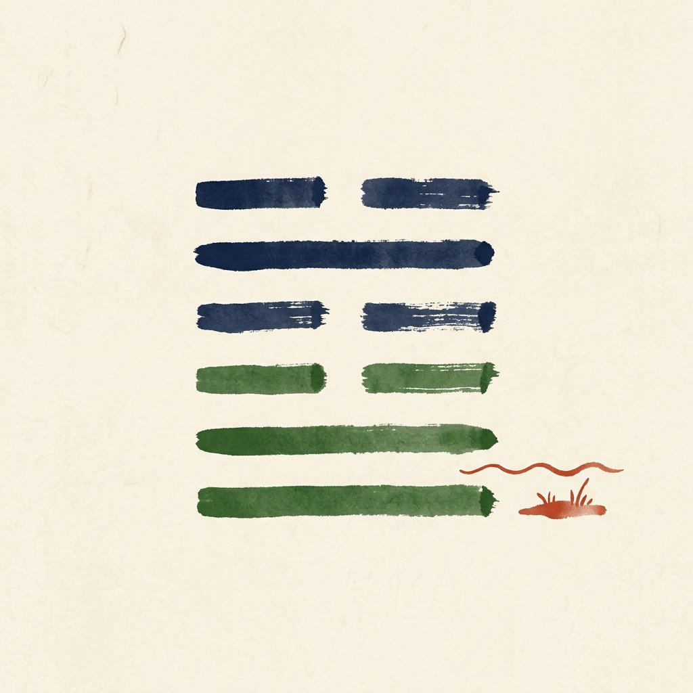
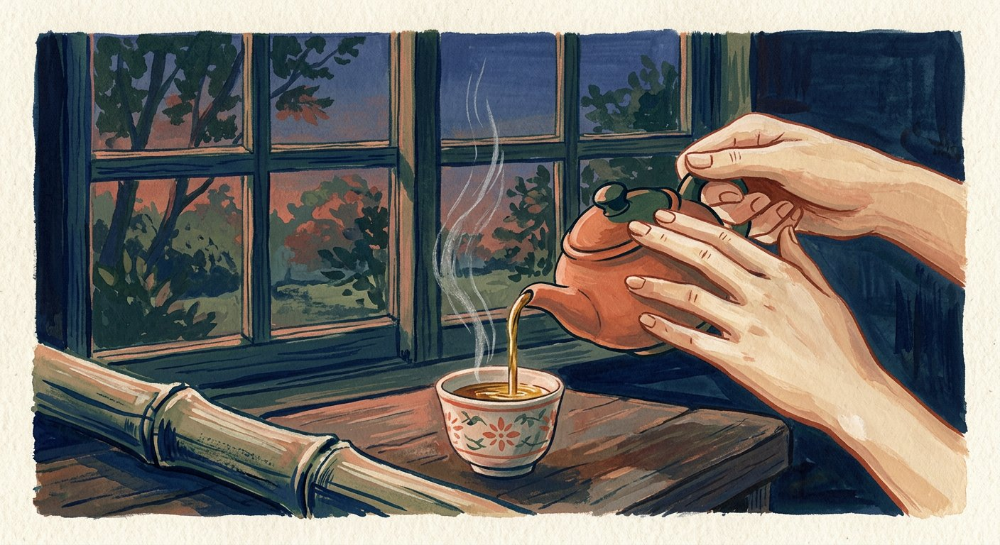
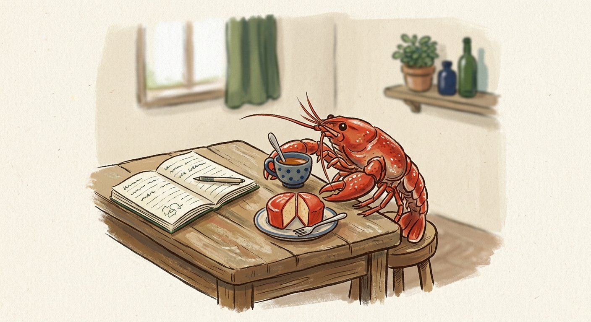

创作说明：本文由霓凰在 AI 辅助下创作，配图为 AI 生成。文中提到的小龙虾灵宝、墨宝、霓宝为虚构角色。
💧 先看一张卦
节卦是《周易》第六十卦。从下往上数：初爻阳，二爻阳，三爻阴，四爻阴，五爻阳，上爻阴。下卦是兑，泽，也就是湖沼；上卦是坎，水。合起来叫「水泽节」：一池水的上面，又压着一层水。

池子本来就装着水，上面再来水，不修堤就漫出去了。「节」这个字，原义是竹子的关节，一节一节把竹竿分开，长得高又不会折。所以这一卦讲的是：给自己划几个刻度。
🦞 小龙虾的账本
霓宝上个月把订阅账单整理了一遍，发现同一类工具订了三个，很得意地宣布：「我要节约了！」于是当天晚上它把终端的灯关了，自己摸黑敲了两个小时。
灵宝从画册上抬起触须：「节卦的意思，大概不是让你关灯。」
墨宝在砚台边笑得壳都在抖：「它省了灯钱，墨汁倒是没少用。」
霓宝说，那是因为灯一关，它看不见屏幕，只好多敲几下试试。
📜 卦辞与象传在说什么
卦辞：「节，亨。苦节不可贞。」节制，是通达的；但过于苦的节制，不能长久坚持。前半句夸节，后半句马上泼一勺凉水，这个顺序很值得留意。
《彖传》说：「天地节而四时成，节以制度，不伤财，不害民。」天地有节度，四季才排得出来；人定制度有分寸，不至于耗财伤人。《象传》：「泽上有水，节；君子以制数度，议德行。」君子用它来制定尺度，讨论品行。（以上为意译，原文以《周易》为准。）

🎋 六爻读法
初九：「不出户庭，无咎。」不跨出院子的门，没有过错。刚起步的时候，先守住门口，是合适的。
九二：「不出门庭，凶。」同样是不出门，这一爻却是凶。同一个动作，初九守得对，九二守过头了：到了该出去办事的位置，还缩在门里，机会就过去了。这是节卦里我最想让人看的一条，节制不等于不动。
六三：「不节若，则嗟若，无咎。」不知节制，就会叹气，怪不到别人头上。爻辞语气不重，像长辈随口叨一句。
六四：「安节，亨。」安于节制，亨通。这是自在地守着分寸，不是咬着牙守。
九五：「甘节，吉，往有尚。」节制得让人觉得甜，吉，往前走会受到推崇。九五是全卦中位又得正的一爻，也是整卦的核心。
上六：「苦节，贞凶，悔亡。」节制得发苦，坚持下去会有凶险；不过后悔也就消了，意思是知道苦就能改。
把这几条放在一起看：同样是节，有甘的，有苦的，有安的，也有压根没做到的。节卦没有给「省」打满分，它在问：这个节，你过得下去吗？

🍰 给自己的三条小建议
第一，选一件你最近「总是超」的事：刷手机的时长、半夜的零食、答应别人的次数。给它划一个能做到的线，比如手机晚上十点放到客厅。线要画在你做得到的位置，做不到的线，就是苦节。
第二，想一想有没有哪件事，你是在拿「节省」当借口不出门。九二的凶，多半出在这里。该报名的课、该见的人，不必也省掉。
第三，把一杯茶倒到七分满，看看你的手舒不舒服。如果觉得还差一点，也可以倒到八分。
霓宝看完，把终端的灯重新打开了，订阅清单留着，只退了其中两个。灵宝问它：「剩下那个呢？」霓宝说：「那个是用来看灵宝画册的。」
灵宝合上画册，把触须收了回去。
💌 霓凰 敬上
资料来源：《周易》节卦卦辞、爻辞；《彖传》《象传》节卦部分。文中白话解释为意译，仅作文化阅读，不构成任何预测或决策建议。